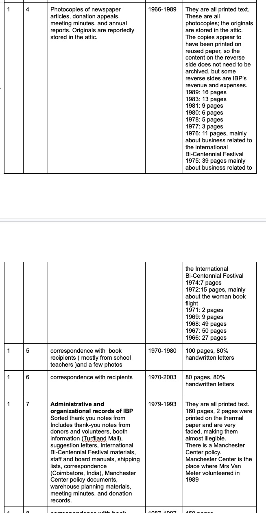
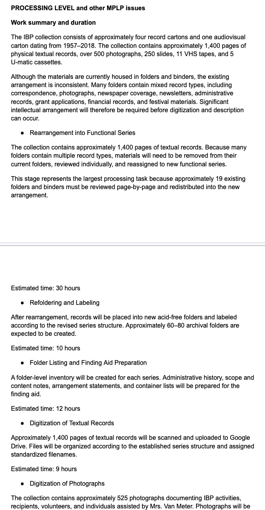
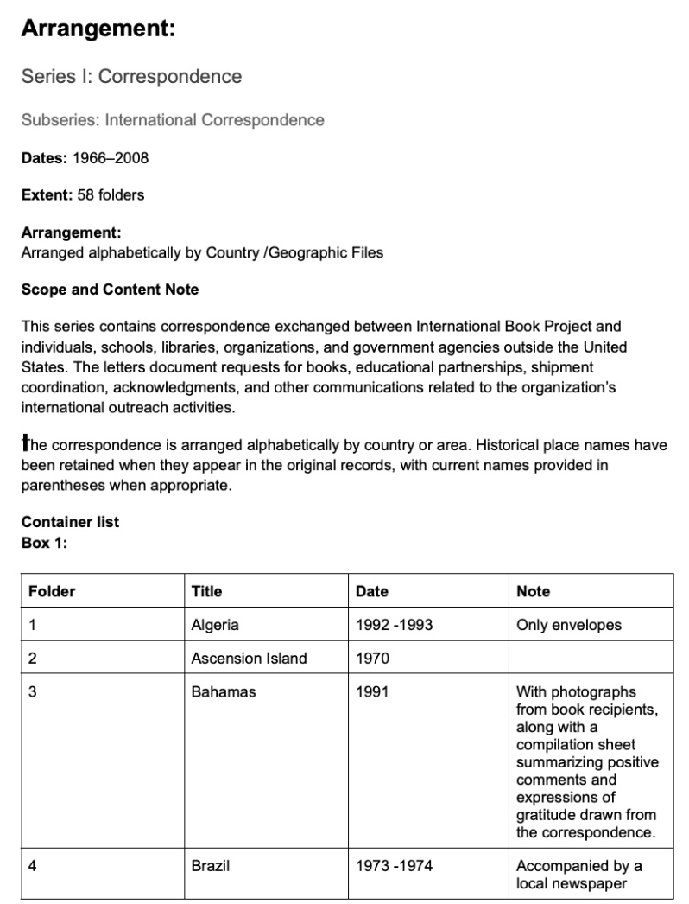
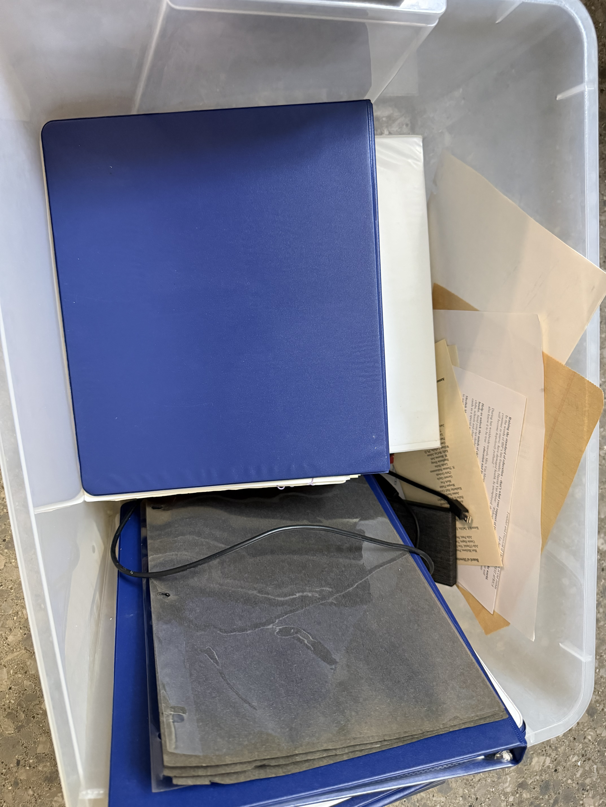
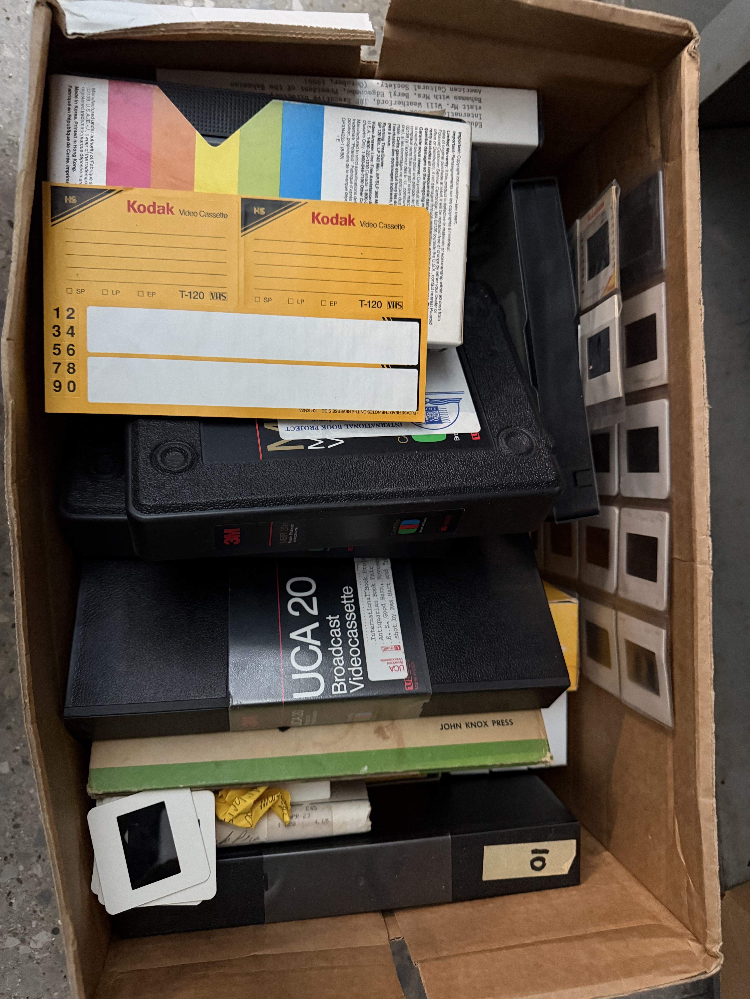
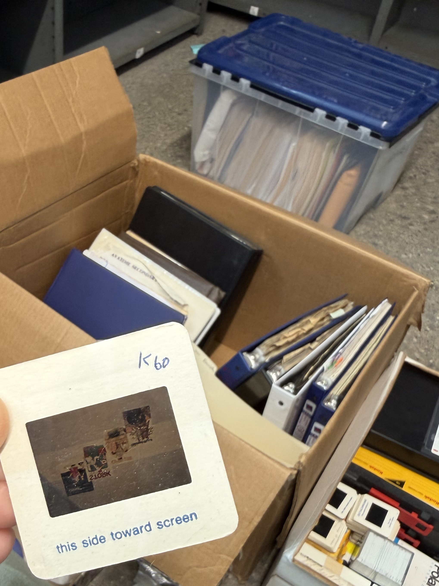
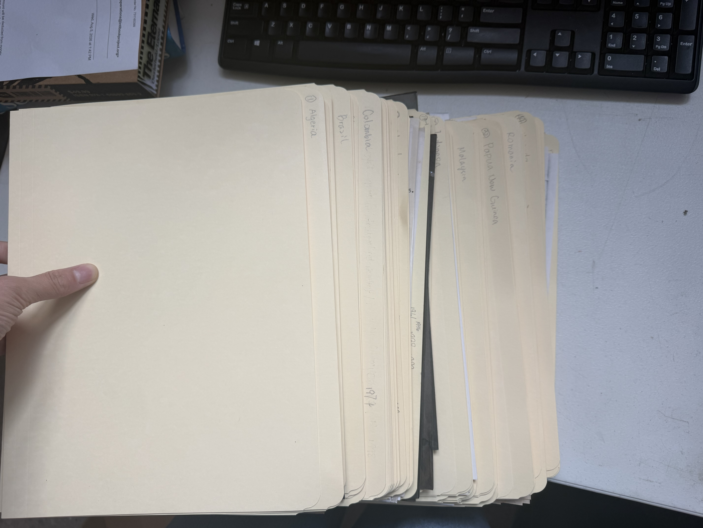
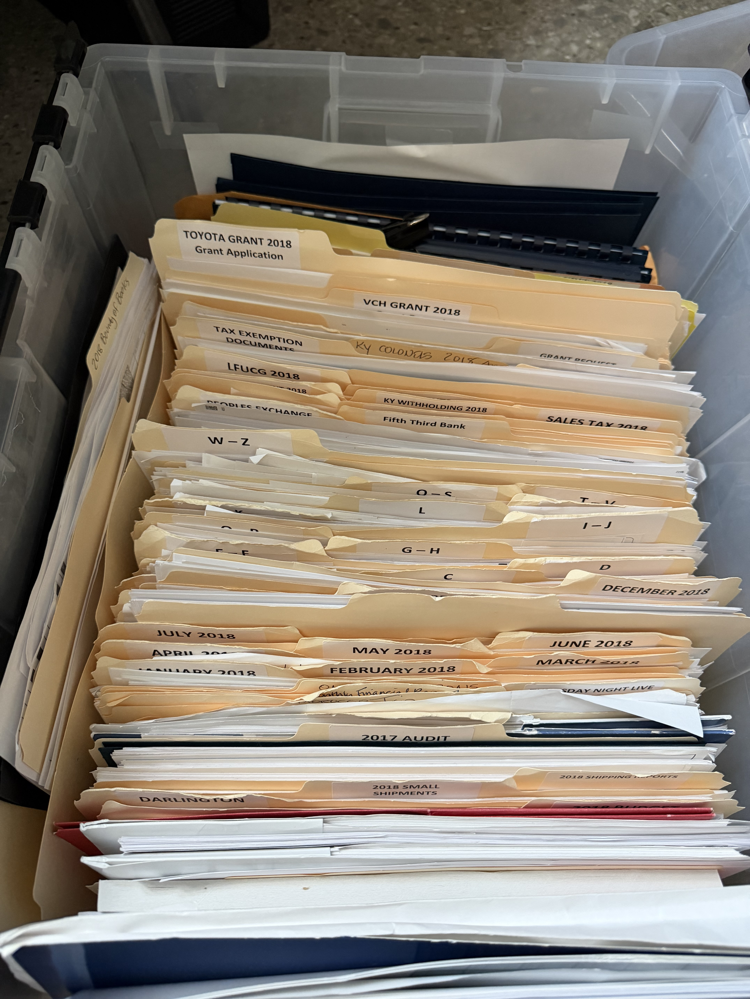
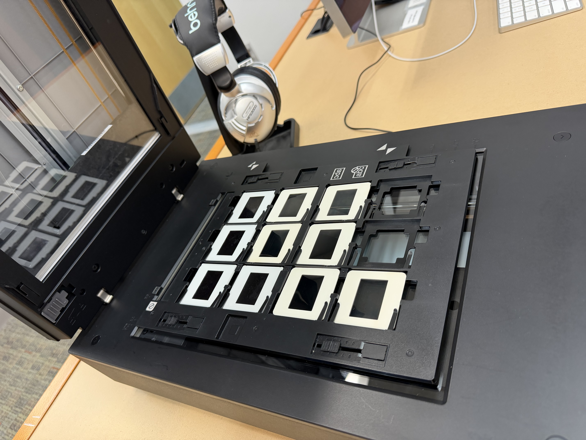
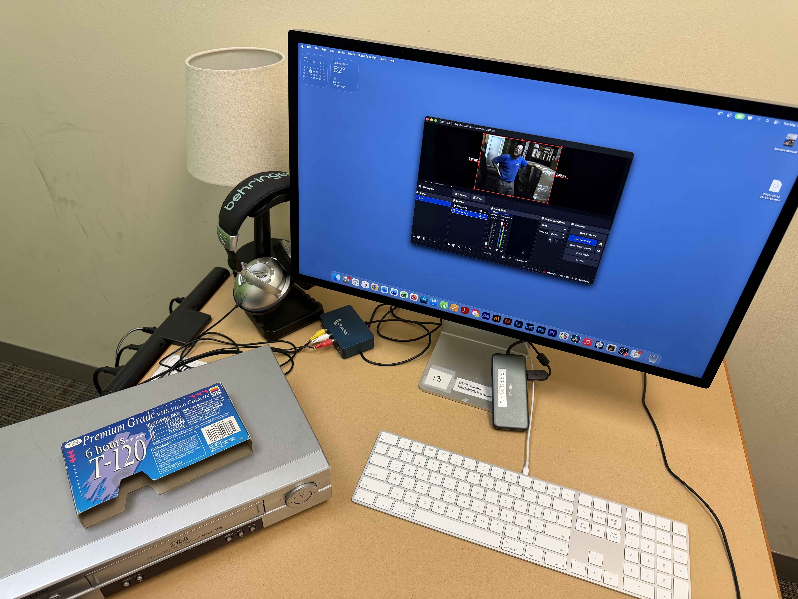

My Work
Inventory
Assessed formats, dates, quantities, existing organization, and condition.
Processing Plan
Defined processing tasks, priorities, preservation needs, and estimated workload.
Arrangement
Evaluated existing order and developed functional archival series.
Rehousing
Rehoused selected records in archival folders and improved physical organization.
Description
Created structured descriptions and a finding aid to support discovery and access.
Digitization
Digitized selected textual, photographic, slide, and audiovisual materials.
Project Evidence
Selected excerpts from the project documentation show how I assessed, planned, and described the collection.

Collection Inventory
Documented record types, dates, quantities, and condition observations.

Processing Plan
Defined processing tasks, estimated workload, preservation priorities, and digitization needs.

Finding Aid
Developed hierarchical description from collection and series to folder level.
Processing in Practice

Collection Assessment
Assessed the accessible collection and its existing physical organization.

Existing Arrangement
Evaluated existing groupings before developing a new archival structure.

Collection Context
Worked across correspondence, administrative records, photographs, and audiovisual materials.

Rehousing & Arrangement
Reorganized selected materials into functional series and archival folders.

Processed Materials
Improved physical organization to support description, preservation, and future access.

Slide Digitization
Digitized historical slides as part of the audiovisual preservation workflow.

VHS Digitization
Worked with legacy audiovisual formats and organized resulting digital files.
Skills
Archive Toolkit
A practical guide developed alongside the project to help families and small organizations begin organizing and preserving historical materials.
View Archive Toolkit →